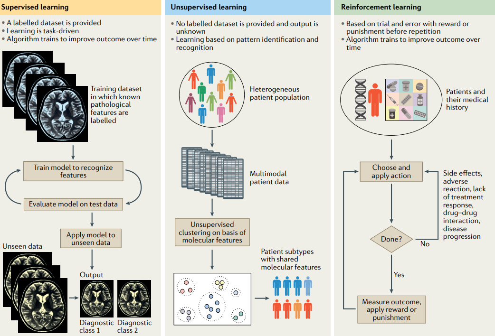
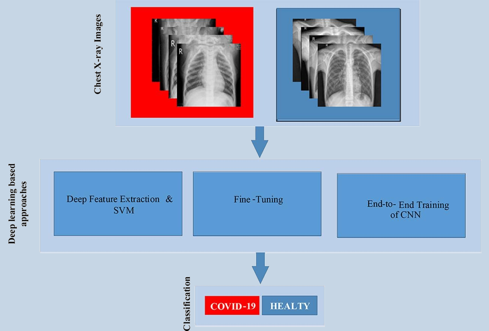
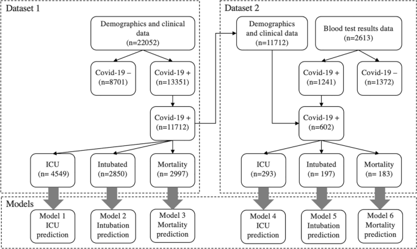
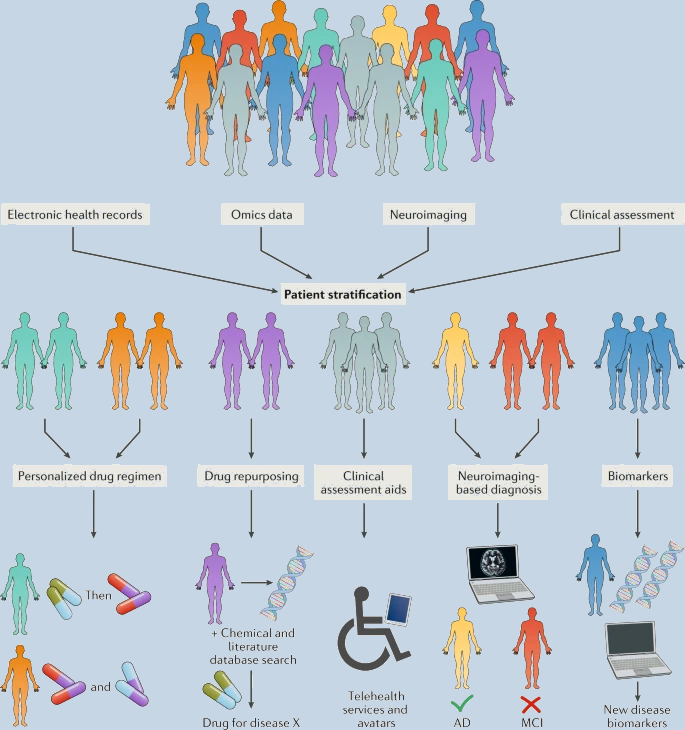

I. INTRODUCTION
Artificial Intelligence is an ever-growing field of modern technological development that speaks to many people’s sense of wonder and/or their sense of fear with the representation of artificial intelligence in popular media spanning from the friendly Baymax of Big Hero 6 to the world ending Skynet of the Terminator series. A common concern with artificial intelligence is that it will go rogue and try to destroy humanity. However, the modern era of AI is nowhere near the level depicted in media for both the better and the worse depending on the example. Machine learning is in the forefront of most AI development in the current day and specifically with the medical field presents the biggest promise of improving lives. However, as of 2019 very little machine learning has been used in our current healthcare system despite the ever-growing usage of computer systems in medicine [1] .
Machine learning has become a large field of research due to the vast diversity in the types of machine learning models and algorithms that can be implemented as well as the variety of potential problems machine learning models could assist in addressing in the active medical field such as laborious diagnosis procedures [3], inconsistent forewarning of risk factors in large data sets [4], or high patient flow pressuring clinicians [5]. Despite the nearly limitless potential, there are a variety of current failures in machine learning research and many avenues yet to be fully explored [6]. However, with the proper implementation and support, machine learning can help diagnose and prognose a variety of conditions such as COVID-19, cancer, stroke, or neurodegenerative disease through the trained analysis of health records, lab results, and specialized imaging.
II. TYPES OF MACHINE LEARNING
There are three overall categories of approach in design that machine learning falls under, supervised, unsupervised, and reinforcement learning [4].
[4]Supervised machine learning algorithms, the most prevalent approach for producing detailed diagnostic or prognostic results, are trained using labeled data sets which often require manual curation by an expert in the field to make connections between future inputs (features) and the appropriate output (labels) [1], [4]. The resulting algorithm can then be applied to unlabeled data sets to determine the appropriate label for any given feature present in the new data set. [4]
Unsupervised machine learning algorithms in comparison are trained using unlabeled data sets. They’re useful for separating the unlabeled data into large categories in a way that helps to reduce the complexity of the provided data [4]. These would primarily be used to indicate certain commonalities between otherwise difficult-to-process data such as genetic structures.
Lastly, reinforcement machine learning models operate under the practice of providing a model either a reward or punishment for a given action or outcome that, through trial and error, incentivizes the model to pursue said rewards and avoid said punishments by becoming increasingly accurate in its predictive capabilities. These types of models are the least used approach currently but are being investigated thoroughly [4].
III. MEDICAL APPLICATIONS
A. Diagnostics
One of the primary applications for machine learning in medicine is the ability to diagnose otherwise difficult-to-identify conditions. The diagnostic applications of these machine learning algorithms are diverse in their spread, but one of the more recent global medical events that machine learning has proven effective in detecting is that of COVID-19. Though most advantages of machine learning regarding COVID-19 are found in prognosis, a 2021 study showed that it could also be used for diagnosis when two researchers, Ismael and Sengur, used X-ray images to accurately detect COVID-19 [5], [7].
[7]A more common and historied application of machine learning in the diagnostic field is that of identifying the ever-present disease, cancer. For solid tumor diagnosis, the usage of a deep convolutional neural network (DCNN) model (a type of machine learning) has been shown to increase the precision in determining the severity of thyroid cancer[8] with comparable accuracy to radiologist teams. The early detection and accurate diagnosis of cervical cancer is another field where machine learning has proven effective especially when compared to the arduous manual process that is standard[3].
Strokes are another condition that researchers have investigated for the further automation of diagnosis. Since strokes are such a common condition, ranking third in burden globally in 2013, and with ischemic strokes consisting of 80% of strokes, the more streamlined and accurate diagnosis of strokes will have a globally positive impact on the effective addressing of this condition [9].
One last implementation of machine learning for diagnosis can be found in the early detection of neurodegenerative diseases such as Alzheimer’s disease (AD), Parkinson’s disease (PD), and motor neuron disease (MND) [4]. With the current rise in the average age of the global population and studies indicating that that trend will continue, the occurrence of neurodegenerative diseases will continue to rise as age is the main risk factor [4]. This has already been shown to have a dramatic impact financially and on medical personnel workload which highlights the present need to improve how diagnosis and treatment of these diseases is handled [4]. There hasn’t been a definitive solution to the problem with the proposed model needing to be highly sophisticated and sensitive, but machine learning models are being actively developed to improve the accuracy and efficiency of said diagnoses [4].
There are other conditions that machine learning has been proven effective in diagnosing, but these common and serious conditions help grant an idea of the broader picture.
B. Prognostics
Another primary implementation of machine learning is in the development of accurate predictive data to better create treatment plans for those already diagnosed. As stated previously, COVID-19 has been a recent avenue of medical research, and, in 2020, a study by researchers Bari and Coffee developed a proof-of-concept AI model on a small set of data to predict severe cases of COVID-19 with an accuracy rate of 70-80% [10]. As recently as in a 2023 study, Serpil Ustebay and their team used machine learning to predict the need for intensive care and the mortality risk of patients[5].
[5]As with diagnosis, cancer is a major field of machine learning prognosis due to the challenge of accurately predicting how cancer will develop using traditional statistical models [8]. With the increase in predictive accuracy, better plans for treatment can be implemented both increasing survival rates and decreasing unnecessary financial or workforce burdens. One example of machine learning assisting in the production of cancer prognostics is how a research team developed a machine learning model to analyze prior prognostics of stage III colon cancer patients to potentially reveal crucial trends for the future production of accurate prognostics [2]. In a study of the use of machine learning in the prediction of gastric cancer to forecast survival rates, the prediction nearly matching the actual results perfectly [8]. For breast cancer, there are some modern tests based on machine learning such as MammaPrint, which is used to predict the probability of an early-stage tumor spreading to nearby regions, or Oncotype DX, which calculates the chance of the cancer metastasizing in the next decade [8].
Building off the previous discussion on the diagnosis of stroke, the prognosis production of the condition is heavily reliant on the diagnostic data gathered. Implementing the prior categorization of patient phenotypes has been effective in predicting stroke outcomes [9]. Similarly, the same data that is used to diagnose patients with neurodegenerative diseases early can be used to gather information and expand on the depth of knowledge on the common progression of the illness that would increase future predictive and prognostic accuracy for patients identified with the same endotype or phenotype [4].
Just like with diagnosis, there are other areas or medical conditions where the predictive power of machine learning can shine, but the usefulness of this form of artificial intelligence is not limited to generating diagnostics and prognostics.
C. Auxiliary Applications
Though machine learning’s applications in the diagnosis and prognosis of a variety of different conditions may be one of the more directly lifesaving uses, the other areas where machine learning is being used to improve medicine are also important. One of these comes in theoretical testing where a scientist would be able to gather past data to help develop a hypothesis, use machine learning to model it and adjust it, and easily and rapidly replicate the process to simulate the larger clinical testing pool that would be required to test viability all before ever actually creating a product [8]. Similarly, the increase in precision medicine makes the distinct organization of diseases and conditions more important, especially for such things as genomic discoveries or the determination of auxiliary side effects of drugs based on the genetic traits of a given patient [9].
When it comes to newly developed drugs going through actual clinical trials, an issue that often occurs is the difficulty in finding sufficient and appropriate participants for the testing. Even here, machine learning can help in curating information on a large set of potential patients’ medical records to assist in bringing together an appropriate group for a given trial [2].
One of machine learning’s greatest strengths is its ability to process massive amounts of data quickly and effectively, so using this ability can also help in finding new insights from already collected healthcare data that might not be caught otherwise [4]. Without machine learning the ever-expanding data that is being gathered would not be able to be meaningfully processed where the capacity of human comprehension would be insufficient. This relates both to the extreme number of patients that data is gathered upon, and the exactingly precise and expansive data potentially gathered on a single patient through bloodwork or genomic profiling [1]. This is only relevant though when the machine learning model can smoothly interface with the present system of record keeping.
[4]IV. PRESENT FAILURES IN RESEARCH
With all these possibilities that machine learning promises to provide for the medical field, there are still a few areas of concern to address for the future. One of the more concerning issues that has become apparent is how the accuracy of machine learning models has been progressing slower with data sets that resemble real-life settings more than the cleaner data sets that are often used. Additionally, with many studies on progressing machine learning models, the margin of improvement does not even exceed the potential margin of error. Even the direction of research can often be motivated by the ease of data availability rather than actual medical need or exigence [6].
As alluded to earlier, often there are issues with the data set that the model is being trained on as well. When data sets are too small, the machine learning models often prove to be too brittle or easy to break proper functionality. Many studies work with what they have to arrive at the best possible machine learning model under the circumstances, but until sample sizes match the needs of the models, practical real-life performance will remain unreliable or rare [6].
V. CONCLUSION
With the rapid development of computer technology, the possibilities of properly implementing the varying machine learning models are vast and sometimes intimidating to consider. However, with the proven effectiveness shown in many studies in diagnosing and prognosing for serious conditions such as COVID-19, cancer, stroke, or neurodegenerative diseases, it becomes a bit easier to understand how this newly developing tool can enable the healthcare system to better treat those patients in dire need. If the research failures can be addressed with improved data organization, gathering, and availability, then with enough time and effort the dream of ever more accurate and efficient treatment comes closer to reality.